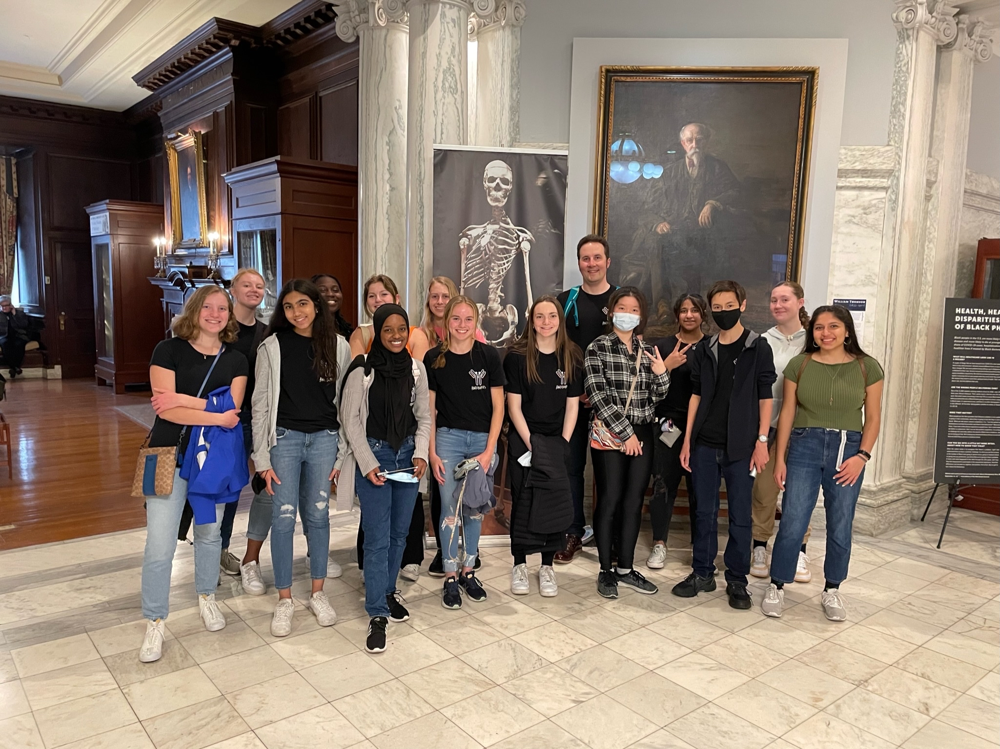

Welcome to my website.
My main interests include philosophy and coding,
but I love learning and doing any sort of cool project.
I go by Ziixx on the internet.
Enjoy your stay.
TwitterSteam
Discord: Ziixx#0787
email me: ltkrier314@gmail.com
Mahtomedi MaPS Teams' 2022 Posters for EB
This was a wonderful experience and conference where 14 high school students raised funds and researched complex topics for roughly a year, culminating
in a presentation at the largest biology conference in the country. I am truly grateful to have been a part of this. Briefly, I want to mention my highlights
of the EB conference.
1. Obviously, the poster session
2. Raiding every single booth in the exhibit hall with Kaelyn
3. Seeing the Mutter Museum
4. Dim Sum and Mango Smoothie excursions into chinatown
DISCLAIMER: I am NOT the owner of these posters, except for the one I was explicitly cited in (Bah et al.). These posters are here because
of all of their permission and THEIR hard work. If you use these posters for any reason, please cite them. There should be the appropriate citation
under each of the posters and in the README of the download. Again, all ownership, including right to publication, lay with the original owners.
To my teammates who created the posters: if you want me to take these down, let me know and I will remove them immediately.
Click for an explanation of my citations
Click to download the posters
Click to download the models I have
Nanobodies: Junior Team: Fatimah Bah, Aradhna Chandra, Luke Krier, Anna Wisniewski. (my poster)
Bah et al. "Na'Nobody' Likes Covid-19!: The Role of Nanobodies in Fighting COVID-19." Edited by Jim Lane, https://ziixx.net/projects/MaPS2022.html, 2022.

Meditopia: Junior Team: Zoe Coler, Claire Faulkner, Stella DeMars, Sneha Sureshkumar.
Coler et al. "Meditopia: Meditope-Enabled Bonds and their Affinity with Cetuximab." Edited by Jim Lane, https://ziixx.net/projects/MaPS2022.html, 2022.

Rheumatoid Arthritis: Senior Team: Kaelyn Chen, Katelyn Lawrence, Toluwalase Akintola.
Chen et al. "On the Flame: The Fab Fragment of Rheumatoid Arthritis." Edited by Jim Lane, https://ziixx.net/projects/MaPS2022.html, 2022.

Influenza: Senior Team: Evelyn Cegielski, Smriti Samtani, Anna Thompson.
Cegielski et al. "Engineering a Better FLUture with Monoclonal Antibodies." Edited by Jim Lane, https://ziixx.net/projects/MaPS2022.html, 2022.